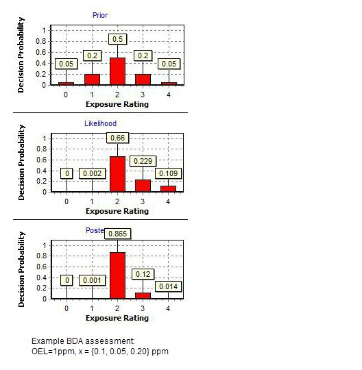
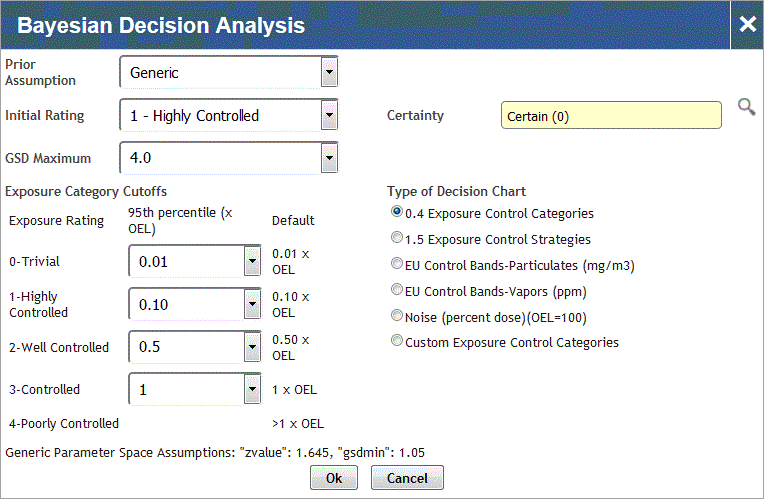

Cority offers the ability to run both traditional and Bayesian statistical analysis within a risk assessment record. Once a qualitative assessment is performed, you can query the database for quantitative sampling data which is then used to calculate and store traditional and Bayesian statistical data.
Both traditional and Bayesian statistical results are displayed in the Decision Analysis tab of the risk assessment record.
The Bayesian statistical analysis performed within Cority is through a direct interface with IH Data Analyst©, a Bayesian decision analysis (BDA) tool developed by EASi Software Solutions, Inc. The BDA tool is designed to assist industrial hygienists in selecting the most appropriate exposure rating for a similar exposure group or task. The tool should be used in conjunction with standard descriptive and compliance statistics offered within Cority. BDA should not be used without training. BDA is best suited to industrial hygiene programs that use the AIHA exposure rating method and decision statistic is the 95th percentile.
The advantages of BDA include:
the output is a set of easy to interpret decision charts;
professional judgment can be incorporated into the analysis;
it is best suited for small datasets;
it can handle non-detects;
it encourages the improvement of professional judgment through a built-in feedback.

The "Prior" decision chart summarizes what is known or assumed a priori about the SEG exposure profile. Each bar in the decision chart represents the probability that the true 95th percentile exposure falls within one of the AIHA exposure categories.
The "Likelihood" decision chart is calculated from the data and indicates which exposure category of exposure profiles most likely generated the data.
The "Posterior" decision chart combines the Prior and Likelihood decision charts, using the Bayesian method. You then have the option to base the final decision on either the Likelihood or Posterior decision chart.
BDA provides feedback regarding the accuracy of professional judgment. If the Prior decision chart is clearly inconsistent with the Likelihood chart, the IH should conclude that either the initial rating was incorrect or the process has changed substantially since the last evaluation. The final decision should be made on the Likelihood decision chart, which reflects the most current exposure information.
The following are the steps to perform both traditional and Bayesian statistical analysis within a risk assessment record. Please note that in order to perform Bayesian statistical analysis, you must first perform traditional statistical analysis so that the critical data necessary for Bayesian analysis is available on the risk assessment record.
In the Tasks-Hazards-Controls section on the Assessment Details tab of an Industrial Hygiene risk assessment record, select the checkbox beside a record and choose Actions»Run Statistical Analysis.
The Decision Analysis requires the post control fields (those ending with 2) on the task record be populated.
In the query window, identify the parameters of the data set requested for the statistical analysis. Many filters are available including, but not limited to, SEG, process, task, location and sample date. For information about using the query fields, see Query Filtering.
Click Lognorm to execute the data query and present the data set in traditional statistical tool. Be sure to select the statistics tab on the tool so that the statistical analysis within the tool executes and stores the data on the decision analysis section of the risk assessment record.
If you have not purchased the IH Data Analyst interface, after traditional statistics is performed you can export the query in .xls format and open the file in a standalone version of IH Data Analyst. You can then manually enter the Bayesian statistical data into Cority within the Decision Analysis record.
Once the traditional statistical analysis is complete, in the Decision Analysis section of the risk assessment record, open the Run ID for the analysis performed.
If you have purchased the IH Data Analyst© interface and are flagged as an EASi Solutions software user in the user table, you can choose Actions » Run Bayesian Analysis.

Enter the Prior Assumption, Initial Rating and Certainty(only available if Prior Assumption=Generic). These are critical data points in the Bayesian analysis.
The GSD Maximum defaults to 4; change this value if required for your sample data set.
Selected the appropriate Type of Decision Chart. The Exposure Category Cutoffs will change depending on your selection.
Click OK. Once the analysis is completed, Cority will store the final BDA results and charts on the decision analysis record.
In addition to executing and storing traditional and Bayesian statistical analysis, you can also enter additional information in the Decision Analysis section including, but not limited to, the final Exposure Profile, Exposure Scenario and PPE Conclusions. There are also three optional calculated fields:
Generic Professional Judgment is a calculated field based on several system settings. A global setting determines if the calculation is based on the calculated Risk or the calculated Information Gathering Priority of the exposure assessment record. The Generic Professional Judgement can be a value of 0 through 4, based on the range of either the Risk or Information Gathering Priority. There are system settings that define the range for each value of 0 through 4.
Priority= the exposure category with the highest probability in the Bayesian Analysis (Posterior) section x Hazard Rating.
Reassessment Date is calculated based on the ExposureAssessmentReassessmentDate look-up table, which in turn uses the Priority field. You may enter the reassessment date manually instead.
Bayesian Decision Analysis can calculate exposure ratings to make a recommendation for respirator (PPE) selection. To do this you will:
The results will be displayed on a PPE (Respirator) Selection chart with an APF x-axis and a Decision Probability y-axis. If a change is made to the original BDA data, the chart will clear (no longer display). To re-populate the chart with the new result, you can simply re-run the BDA PPE Analysis.
To satisfy the requirements of the European EN689 workplace exposure standard, an industrial hygienist can: